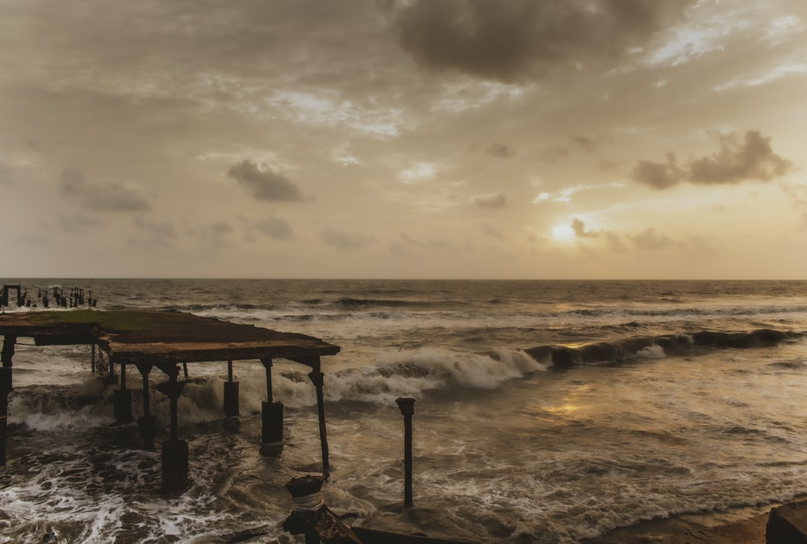

Kozhikode Beach – Stunning Views
Of all the best beaches Kozhikode is famous for, Calicut beach happens to be an ideal location for tourists who want to unwind themselves from the stress and pollution of the city. If you are keen to discover the river in Kerala, this is one of the perfect places to see in Kozhikode that you need to add to your itinerary. The beach not only offers the best sunrise and sunset views but every year in January, the beach also plays a great host to one of the biggest festivals called the Malabar Mahotsavam.
...
...